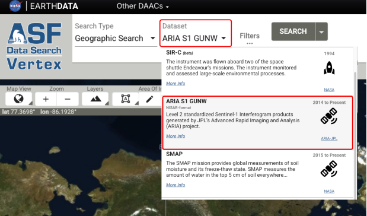
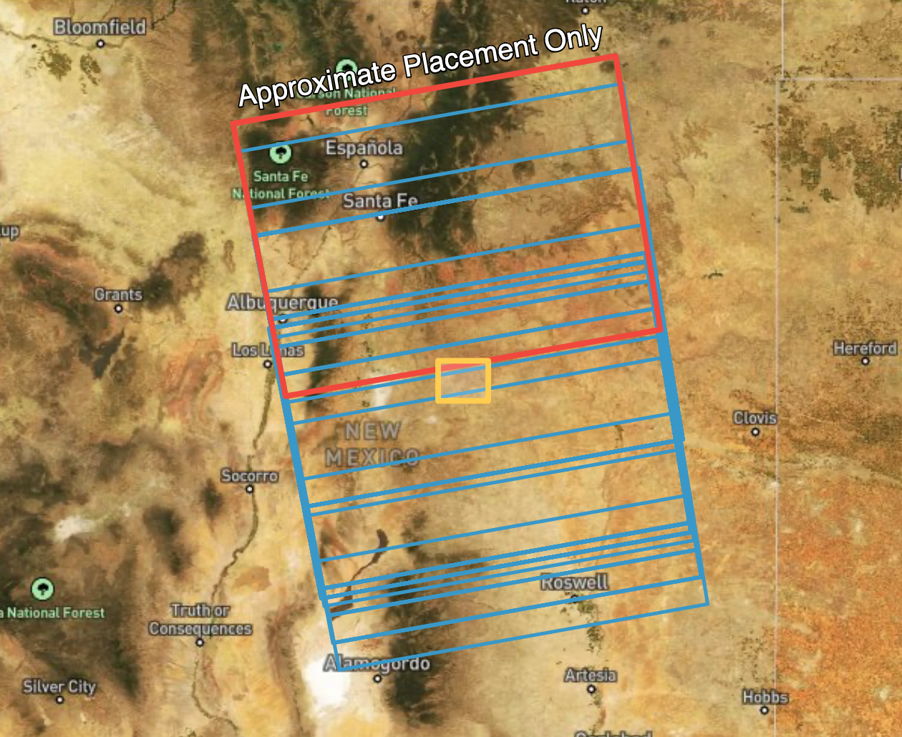
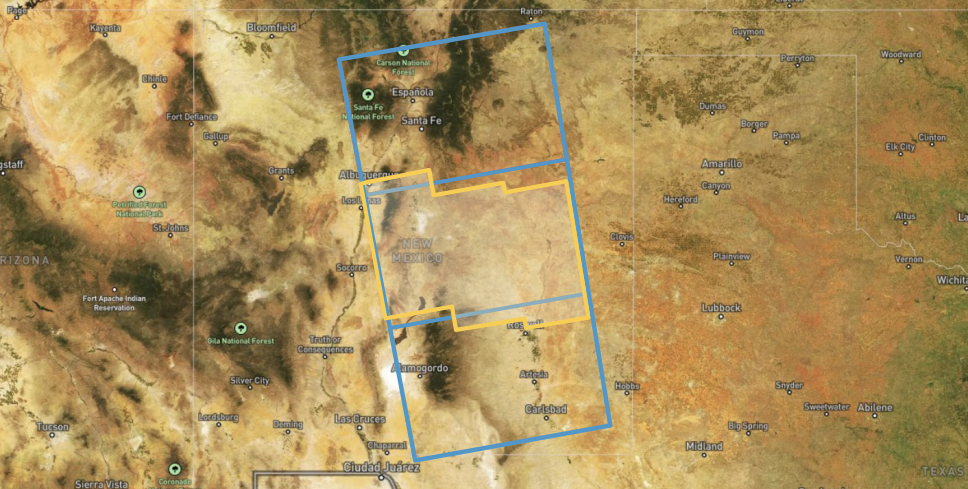

ARIA Sentinel-1 GUNW Product Guide¶
This document is a guide for users of ARIA Sentinel-1 Geocoded Unwrapped (GUNW) Interferograms.
The ARIA Sentinel-1 Geocoded Unwrapped Phase (ARIA-S1-GUNW) product is a standardized interferometric SAR (InSAR) dataset that enables rapid analysis of surface deformation using Sentinel-1 SAR data. Produced by JPL’s ARIA project and hosted at the Alaska Satellite Facility (ASF) DAAC, it provides CF-compliant NetCDF files at 90-m pixel spacing, containing unwrapped interferometric phase measurements, imaging geometry, various correction layers, and metadata.
With over 1.1 million (and growing!) freely available products covering major fault systems, volcanic regions, and coastal zones, ARIA-S1-GUNW products facilitate scientific research and disaster response by simplifying access to centimeter-scale ground displacement measurements. Generated through an open-source, cloud-based ISCE2 TopsApp processing pipeline, these products support applications such as earthquake impact assessment, volcanic monitoring, and long-term land motion studies, with ongoing improvements enhancing their accuracy and usability.
The ARIA project also maintains the ARIA-tools software, which is a suite of open-source tools which automates the seamless download, post-processing manipulation, aggregation, and management of ARIA-S1-GUNW products. Users may refer to the dedicated GitHub page for a more exhaustive overview and installation instructions, and EarthScope Consortium led tutorials which demonstrate practical applications.
ARIA-S1-GUNW products are not produced globally
ARIA-S1-GUNW products are routinely produced only for specific locations, so the ASF archive may not contain products in your area of interest. See the Ordering On Demand Products section for information on ordering ARIA-S1-GUNW products for specific Sentinel-1 acquisitions.
Archived and On-Demand Products¶
While there is a large archive of ARIA-S1-GUNW products that have already been generated and are ready for download, they may not cover your area of interest. In addition, the archived products may not include the full range of temporal baseline pairings required for your analysis. If you are interested in ARIA-S1-GUNW products that are not already represented in the archive, ASF provides the ability to generate these products using specific Sentinel-1 SLC pairings.
The On Demand ARIA-S1-GUNW products are generated using the same code that is used to generate the archived products, so they are fully interoperable.
Accessing Existing Products¶
You can download existing ARIA-S1-GUNW products from the Alaska Satellite Facility’s (ASF) Vertex search portal by following these steps:
- Access Vertex – Go to the ASF Vertex website: https://search.asf.alaska.edu.
- Search for ARIA-S1-GUNW Products – In the dataset selector, click on “ARIA S1 GUNW” to filter for these specific products. You can refine results by specifying a geographic region, date range, or other criteria using the search filters in the “filters” panel. 
- Preview and Select Products – Click on individual results to view metadata, including coverage area and acquisition details.
- Download Data – To download, first add ARIA-S1-GUNW products to your download queue using the shopping cart icon next to each product, then download your selected products using the “download” panel.
Ordering On-Demand Products¶
If the ARIA-S1-GUNW products you need are not available in the archive, you can use ASF's On Demand platform to submit custom ARIA-S1-GUNW jobs for processing.
Sentinel-1C acquisitions not yet supported
ISCE2 software, which is used for processing ARIA-S1-GUNW products, does not currently support processing SLCs acquired by the newly launched Sentinel-1C platform. Until the software package is updated, users will not be able to submit ARIA-S1-GUNW jobs that include Sentinel-1C acquisitions for On-Demand processing.
ARIA Frame IDs¶
Sentinel-1 IW SLC products are not created in a way that ensures that granules for the same relative orbit and location always fully overlap over time. This results in inconsistent framing of the Sentinel-1 IW SLCs that can make it difficult to create longer series of Sentinel-1 InSAR products.
In the image below, Sentinel-1 footprints acquired over an area of interest are displayed. Over the full period of record of the mission, the SLC framing has shifted considerably, resulting in some acquisitions that hardly overlap at all.

To address this issue, the ARIA team defined a standard set of geographic footprints, called frames, that set the geographic extent for each ARIA-S1-GUNW product. This is possible because while the Sentinel-1 IW SLC products are not consistently framed along the orbit path, the smaller burst SLCs that comprise each Sentinel-1 IW SLC product do have consistent footprints.
Each ARIA frame is defined by the extent of a specific collection of these individual burst SLCs. Each ARIA-S1-GUNW product is processed to the extent of one of these frames, which results in output products with consistent footprints through time. ARIA-S1-GUNW products containing the same bursts, and thus sharing the same geographic footprint, are said to have the same ARIA Frame ID.
To ensure that ARIA-S1-GUNW products are always created using standard footprints, the ARIA Frame ID needs to be provided along with the reference and secondary granules that intersect this footprint for a given date in order to create a new ARIA-S1-GUNW product (see figure below).

ARIA Frame ID Maps¶
It can be tricky to find all of the appropriate granules for a given ARIA Frame ID for both the reference and secondary acquisition dates. In the future, ASF plans to create utilities to simplify this process. In the meantime, there are geojson files indicating the extent of each ARIA Frame ID that can be downloaded and used for reference.
There are different ARIA Frame ID maps for the ascending and descending orbit directions. Make sure that you are using the appropriate geojson file.
Search for Sentinel-1 SLCs for an ARIA Frame ID¶
Use a Geographic Search for Sentinel-1 SLC IW products in your area of interest in Vertex, setting the Area of Interest to the desired ARIA Frame ID, as delineated in the ARIA Frame ID maps. You may want to apply a search filter for the orbit direction that matches the ARIA Frame ID extent that you are using.
For each footprint that intersects the ARIA Frame ID, use the SBAS or Baseline tool in Vertex to find other acquisitions to pair with the reference acquisition.
- You will need to repeat the process of finding pairs for each footprint along the Sentinel-1 orbit path that intersects the ARIA Frame ID extent.
Sentinel-1 SLC Selection Constraints¶
There are a number of conditions that must be met when selecting suitable sets of Sentinel-1 IW SLCs for processing to ARIA-S1-GUNW:
1. All scenes (reference and secondary) must be from the same relative orbit
- they must all have the same path number, which matches the path of the extent of the desired ARIA Frame ID
- note that the ARIA frames are each constrained to a single path
- consider adding a filter to your geographic search to limit the returns to acquisitions with the same path number as the ARIA Frame ID
2. All scenes must have the same orbit direction (ascending/descending)
- the orbit direction must match the orbit direction of the ARIA Frame ID you are using
- consider adding a filter to your geographic search to limit the returns to acquisitions with the same orbit direction as the ARIA Frame ID
3. All reference scenes must be from the same absolute orbit
- they must all be from the same pass of the satellite
- acquisitions from different dates cannot be combined
4. All secondary scenes must be from the same absolute orbit
- they must all be from the same pass of the satellite
- acquisitions from different dates cannot be combined
5. Reference scenes must be acquired after the secondary scenes
- the list of reference scenes are from the most recent pass, and the secondary scenes are from the earlier pass that will be compared to the reference scenes
6. Reference and secondary scenes should overlap the frame geometry
- all of the scenes listed must overlap the ARIA Frame ID extent
- do not include any acquisitions where valid pixel data is wholly outside the extent of the ARIA frame, even if the no-data padding around the edges overlaps the frame extent
Compile a List of Sentinel-1 SLCs¶
Based on your search results, create a list of the reference and secondary Sentinel-1 IW SLCs that intersect with the ARIA Frame ID extent.
Example:
"reference": [
"S1A_IW_SLC__1SDV_20250127T010136_20250127T010203_057623_07199D_4B63",
"S1A_IW_SLC__1SDV_20250127T010111_20250127T010138_057623_07199D_4E88",
"S1A_IW_SLC__1SDV_20250127T010045_20250127T010113_057623_07199D_4D3B"
],
"secondary": [
"S1A_IW_SLC__1SDV_20250103T010137_20250103T010204_057273_070BB6_CD45",
"S1A_IW_SLC__1SDV_20250103T010113_20250103T010140_057273_070BB6_1133",
"S1A_IW_SLC__1SDV_20250103T010047_20250103T010115_057273_070BB6_99C5"
],
Submit On-Demand ARIA-S1-GUNW Jobs¶
On Demand support not currently available in Vertex for ARIA-S1-GUNW products
On-demand ARIA S1 GUNW products cannot currently be submitted directly from Vertex, but we plan to make this feature available in the second half of 2025. Vertex is still very useful for selecting Sentinel-1 SLC pairs to submit for processing, but once you identify scene pairs, you will need to submit them using the HyP3 Python SDK or HyP3 API.
On-Demand ARIA-S1-GUNW jobs can be submitted using the ARIA_S1_GUNW job type via the HyP3 API, or via the HyP3 Python SDK using the submit_aria_s1_gunw_job method of the HyP3 class.
Unlike our other On-Demand InSAR workflows, customizable processing options (multilooking, filter strength, etc.) are not available for ARIA-S1-GUNW jobs.
Product Packaging¶
Naming convention¶
The ARIA-S1-GUNW product names contain detailed information about their acquisition and processing, as illustrated in the figure below.
GUNW naming convention includes:
- Satellite orientation. A for ascending or D for descending
- Satellite look direction. L for left-looking or R for right-looking
- Satellite track number (3-digit number)
- Reference and secondary acquisition dates (YYYYMMDD)
- Center time of reference scene(s) in UTC (HHMMSS)
- Longitude and latitude in whole degrees
- Unique product hash
- Standard product version

Product Elements¶
The product is packaged as a NetCDF4 file, with its top-level group named science. Within the science group, there is a grids group, which is further divided into three subgroups: data, imagingGeometry, and corrections. The data group contains 2D datasets at a resolution of 3 arc-seconds (~90 m) and the imagingGeometry group includes 3D datasets posted laterally at 0.1-degree intervals (~11 km). The corrections group provides ionospheric and solid Earth corrections, and if a weather model is available, the corresponding tropospheric correction layer (HRRR/reference/troposphereWet) will be included here. All 2D and 3D datasets are in the EPSG:4326 projection.
The output netCDF file will include the layers listed in the table below.
| Group | Dataset Name | Description | Units |
|---|---|---|---|
| data | amplitude | 2D Amplitude of IFG | watt |
| coherence | 2D Coherence [0-1] from filtered IFG | unitless | |
| connectedComponents | 2D Connected component file | unitless | |
| unfilteredCoherence | 2D Coherence [0-1] from unfiltered IFG | unitless | |
| unwrappedPhase | 2D Filtered unwrapped IFG geocoded | rad | |
| corrections | ionosphere | 2D Split spectrum ionospheric delay | rad |
| ionosphereBurstRamps | Digital elevation model | rad | |
| reference/solidEarthTide | 2D/3D solid earth tide for reference granule | rad | |
| secondary/solidEarthTide | 2D/3D solid earth tide for secondary granule | rad | |
| HRRR/reference/troposphereWet | 2D/3D wet troposphere for reference granule | rad | |
| HRRR/secondary/troposphereWet | 2D/3D wet troposphere for secondary granule | rad | |
| HRRR/reference/troposphereHydrostatic | 2D/3D hydrostatic troposphere for reference granule | rad | |
| HRRR/secondary/troposphereHydrostatic | 2D/3D hydrostatic troposphere for secondary granule | rad | |
| imagingGeometry | azimuthAngle | 3D azimuth angle grid | degree |
| incidenceAngle | 3D Incidence angle grid | degree | |
| lookAngle | 3D look angle grid | degree | |
| parallelBaseline | 3D parallel baseline grid | meter | |
| perpendicularBaseline | 3D perpendicular baseline grid | meter |
Ionospheric Correction Layers¶
Although the ionospheric effects for C-band SAR are only about one-sixteenth of those at L-band, the measurement accuracy of Sentinel-1 C-band SAR data can still be degraded by long-wavelength ionospheric signals. Utilizing the range-split spectrum methodology available within ISCE2, ARIA-S1-GUNW products include ionospheric correction layers for both the reference and secondary input data.
Solid Earth Tides Correction Layers¶
Solid Earth tides (SET) are periodic deformations of the Earth's crust caused by gravitational forces from the Moon and Sun, resulting in surface displacements of up to several centimeters. Correcting for SET in InSAR is crucial to prevent these predictable, cyclic motions from being misinterpreted as real ground deformation. ARIA-S1-GUNW products include an SET correction layer for both the reference and secondary input data that are created using the PySolid python package.
Tropospheric Delay Correction Layers¶
Tropospheric delay correction is essential for many InSAR applications because atmospheric variations in temperature, pressure, and humidity can distort phase measurements, mimicking ground deformation and reducing accuracy. ARIA-S1-GUNW products for both the continental U.S. and Alaska also contain a tropospheric delay correction layer that is produced via the Raytracing Atmospheric Delay Estimation for RADAR (RAiDER) Python package.
RAiDER uses the NOAA High-Resolution Rapid Refresh weather model to calculate the tropospheric delay correction at a spatial resolution of approximately 3 km. If the HRRR weather model is not available for a location of interest, (e.g. outside of the continental U.S. and Alaska) the tropospheric delay correction layer will not be included in the ARIA-S1-GUNW product. The wet and hydrostatic tropospheric delay correction are provided for both the reference and secondary input data.
References¶
Bekaert, David, et al. "The ARIA-S1-GUNW: The ARIA Sentinel-1 Geocoded Unwrapped Phase Product for Open InSAR Science and Disaster Response." IGARSS 2023-2023 IEEE International Geoscience and Remote Sensing Symposium. IEEE (2023).
Buzzanga, Brett, et al. "Toward sustained monitoring of subsidence at the coast using InSAR and GPS: An application in Hampton Roads, Virginia." Geophysical Research Letters 47.18 (2020): e2020GL090013.
Liang, Cunren, et al. "Ionospheric correction of InSAR time series analysis of C-band Sentinel-1 TOPS data." IEEE Transactions on Geoscience and Remote Sensing 57.9 (2019): 6755-6773.
Yunjun, Zhang, et al. "Range geolocation accuracy of C-/L-band SAR and its implications for operational stack coregistration." IEEE Transactions on Geoscience and Remote Sensing 60 (2022): 1-19.